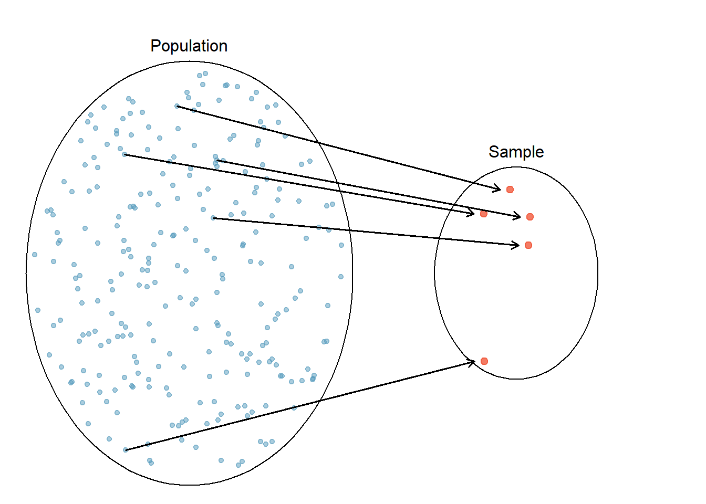

13 Confidence Interval
13.1 Foundations for Inference
Inference Framework
- Inferential statistics uses sample data to learn about an unknown population.
-
Idea: Assume the target population follows some distribution but with unknown parameters.
- Assume the population is normally distributed but its mean and/or variance are unknown.
- Goal: Learn the unknown parameters of the assumed population distribution.


- There are two approaches in parameter learning.
- Estimation
- Hypothesis Testing
13.2 Point Estimator
- The single point used to estimate the unknown parameter is known as a point estimator.
- A point estimator is any function of data \((X_1, X_2, \dots, X_n)\).
- Any statistic is considered a point estimator (before actually being collected).
- A point estimate is a value of a point estimator used to estimate a population parameter.
- This is a value calculated from the collected data.
- The sample mean, \((\overline{X})\), is a statistic and a point estimator for the population mean, \(\mu\).
Sample Mean as an Point Estimator
- Draw 5 values from the population that follows \(N(2, 1)\) as sample data \((x_1, x_2, x_3, x_4, x_5)\).
| x1 | x2 | x3 | x4 | x5 | sample mean |
|---|---|---|---|---|---|
| 1.64 | 1.84 | 1.23 | 0.83 | 1.68 | 1.45 |
- \(\mu = 2\), and we use the point estimate \(\overline{x}=\) 1.45 to estimate it.

- If another sample of size \(5\) is drawn from the same population,
| x1 | x2 | x3 | x4 | x5 | sample mean |
|---|---|---|---|---|---|
| 1.65 | 1.41 | 0.41 | 3.69 | 2.56 | 1.95 |
- The second sample mean, \(\overline{x} =\) 1.95, is different from the first one.

Why Point Estimates Are Not Enough


- Due to the variation of \(\overline{X}\), if we report a point estimate \(\overline{x}\), we probably won’t hit the exact \(\mu\).
- If we report a range of plausible values, we have a better shot at capturing the parameter!
13.3 Confidence Intervals
- A plausible range of values for \(\mu\) is called a confidence interval (CI).
- This range depends on how precise and reliable our statistic is as an estimate of the parameter.
- To construct a CI for \(\mu\), we first need to quantify the variability of our sample mean.
- Quantifying this uncertainty requires a measurement of how much we would expect the sample statistic to vary from sample to sample.
- This is the variance of the sampling distribution of the sample mean!
The larger the variation of \(\overline{X}\) is, the wider the CI for \(\mu\) will be given the same “level of confidence”.
- Do we know the variance of \(\overline{X}\)?
- By CLT, \(\overline{X} \sim N(\mu, \sigma^2/n)\) regardless of what the population distribution is.
Precision vs. Reliability

- With a fixed sample size, precision and reliability have a trade-off relationship.
- Narrower intervals are more precise but less reliable, while wider intervals are more reliable but less precise.
A Confidence Interval Is for a Parameter
- A confidence interval is for a parameter, NOT a statistic.
- For example, we use the sample mean to form a confidence interval for the population mean.
- We never say “The confidence interval of the sample mean, \(\overline{X}\), is …”
- We say “The confidence interval for the true population mean, \(\mu\), is …”
- In general, a confidence interval for \(\mu\) has the form
- The \(m\) is called the margin of error.
- \(\overline{x} - m\) is the lower bound and \(\overline{x} + m\) is the upper bound of the confidence interval.
- The point estimate, \(\overline{x}\), and margin of error, \(m\), can be obtained from known quantities and our data once sampled.
\((1 - \alpha)100\%\) Confidence Intervals
- The confidence level \(1-\alpha\): the proportion of times that the CI contains the population parameter, assuming that the estimation process is repeated a large number of times.
- Common choices for the confidence level include
- 90% \((\alpha = 0.10)\)
- 95% \((\alpha = 0.05)\)
- 99% \((\alpha = 0.01)\)
- 95% is the most common level because it has a good balance between precision (width of the CI) and reliability (confidence level).
-
High reliability and Low precision: I am 100% confident that the mean height of Marquette students is between 3’0” and 8’0”.
- Duh…🤷
-
Low reliability and High precision: I am 20% confident that mean height of Marquette students is between 5’6” and 5’7”.
- This is far from the truth… 🙅
-
High reliability and Low precision: I am 100% confident that the mean height of Marquette students is between 3’0” and 8’0”.
\(95\%\) Confidence Intervals for \(\mu\)
Z-score
- \(\alpha = 0.05\)
- Start with the sampling distribution of \(\overline{X} \sim N\left(\mu, \frac{\sigma^2}{n}\right)\)
- \(\overline{x}\) will be within 1.96 SDs of the population mean, \(\mu\), \(95\%\) of the time.
- The \(z\)-score of 1.96 is associated with 2.5% area to the right and is called a critical value denoted as \(z_{0.025}\) .

Probability
\[P\left(\mu-1.96\frac{\sigma}{\sqrt{n}} < \overline{X} < \mu + 1.96\frac{\sigma}{\sqrt{n}} \right) = 0.95\]

Formula
\[\begin{align} &P\left(\mu-1.96\frac{\sigma}{\sqrt{n}} < \overline{X} < \mu + 1.96\frac{\sigma}{\sqrt{n}} \right) = 0.95\\ &P\left( \boxed{\overline{X}-1.96\frac{\sigma}{\sqrt{n}} < \mu < \overline{X} + 1.96\frac{\sigma}{\sqrt{n}}} \right) = 0.95 \end{align}\]
- With sample data of size \(n\), \(\left(\overline{x}-1.96\frac{\sigma}{\sqrt{n}}, \overline{x} + 1.96\frac{\sigma}{\sqrt{n}}\right)\) is our \(95\%\) CI for \(\mu\) if \(\sigma\) is known to us!
- The margin of error \(m = 1.96\frac{\sigma}{\sqrt{n}}\).

13.4 Confidence Intervals for \(\mu\) When \(\sigma\) is Known
-
Requirements for estimating \(\mu\) when \(\sigma\) is known:
- 👉 The sample should be a random sample, such that all data \(X_i\) are drawn from the same population and \(X_i\) and \(X_j\) are independent.
- Any methods in this course are based on the assumption of a random sample
- 👉 The population standard deviation, \(\sigma\), is known.
- 👉 The population is either normally distributed, \(n > 30\) or both, i.e., \(X_i \sim N(\mu, \sigma^2)\).
- \(n > 30\) allows the Central Limit Theorem to be applied and hence normality is satisfied.
- 👉 The sample should be a random sample, such that all data \(X_i\) are drawn from the same population and \(X_i\) and \(X_j\) are independent.
\((1-\alpha)100\%\) Confidence Intervals for \(\mu\)


-
Procedures for constructing a confidence interval for \(\mu\) when \(\sigma\) is known:
- Check that the requirements are satisfied.
- Decide \(\alpha\) or the confidence level \((1 - \alpha)\).
- Find the critical value, \(z_{\alpha/2}\).
- Evaluate margin of error, \(m = z_{\alpha/2} \cdot \frac{\sigma}{\sqrt{n}}\).
- Construct the \((1 - \alpha)100\%\) CI for \(\mu\) using the sample mean, \(\overline{x}\), and margin of error, \(m\):
Example
- Suppose we want to know the mean systolic blood pressure (SBP) of a population.
- Assume that the population distribution is normal and has a standard deviation of 5 mmHg.
- We have a random sample of 16 subjects from this population with a mean of 121.5 mmHg.
- Estimate the mean SBP with a 95% confidence interval.

- Requirements:
- Normality is assumed, \(\sigma = 5\) is known and a random sample is collected.
- Decide \(\alpha\):
- \(\alpha = 0.05\)
- Find the critical value \(z_{\alpha/2}\):
- \(z_{\alpha/2} = z_{0.025} = 1.96\)
- Evaluate margin of error \(m = z_{\alpha/2} \frac{\sigma}{\sqrt{n}}\):
- \(m = (1.96) \frac{5}{\sqrt{16}} = 2.45\)
- Construct the \((1 - \alpha)100\%\) CI:
- The 95% CI for the mean SBP is \(\overline{x} \pm z_{\alpha/2}\frac{\sigma}{\sqrt{n}} = (121.5 -2.45, 121.5 + 2.45) = (119.05, 123.95)\)
Computation in R
- Below is a demonstration of how to find the 95% CI for SBP using R.
## save all information we have
alpha <- 0.05
n <- 16
x_bar <- 121.5
sig <- 5
## 95% CI
## z-critical value
(cri_z <- qnorm(p = alpha / 2, lower.tail = FALSE)) [1] 1.959964## margin of error
(m_z <- cri_z * (sig / sqrt(n))) [1] 2.449955## 95% CI for mu when sigma is known
x_bar + c(-1, 1) * m_z [1] 119.05 123.95Interpreting the Confidence Interval
- WRONG ❌ “There is a 95% chance/probability that the true population mean will fall between 119.1 mm and 123.9 mm.”
- WRONG ❌ “The probability that the true population mean falls between 119.1 mm and 123.9 mm is 95%.”
- 👉 The sample mean is a random variable with a sampling distribution, so it makes sense to compute a probability of it being in some interval.
-
👉 The population mean is unknown and FIXED, so we cannot assign or compute any probability of it.
- If we were using Bayesian inference, a different inference method, we could compute a probability associated with \(\mu\) because \(\mu\) is treated as a random variable.
- Instead we say, “We are 95% confident that the mean SBP lies between 119.1 mm and 123.9 mm.”
- This means if we were able to collect our data many times and build the corresponding CIs, we would expect that about 95% of those intervals would contain the true population parameter, which, in this case, is the mean systolic blood pressure.
-
Remember: \(\overline{x}\) varies from sample to sample and so does its corresponding CI .
- This idea is shown in Figure 13.6.

- We never know with certainty that 95% of the intervals, or any single interval for that matter, contains the true population parameter.
13.5 Confidence Intervals for \(\mu\) When \(\sigma\) is Unknown
- \(\sigma^2 = \frac{\sum_{i=1}^{N}(x_i - \mu)^2}{N}\), where \(N\) is the population size.
- It’s rare that we don’t know \(\mu\) but know \(\sigma\), so what do we do if \(\sigma\) is unknown?
- We use the Student t distribution to construct a confidence interval for \(\mu\) when \(\sigma\) is unknown.
- To construct these confidence intervals we still need
- A random sample
- A population that is normally distributed and/or \(n > 30\).
- When \(\sigma\) is unknown, we use the sample standard deviation, \(S = \sqrt{\frac{\sum_{i=1}^{n}(X_i - \overline{X})^2}{n-1}}\), instead when constructing the CI.
Student t Distribution
- If the population is normally distributed or \(n > 30\),
- \(\overline{X} \sim N\left(\mu, \frac{\sigma^2}{n} \right)\)
- \(Z = \frac{\overline{X} - \mu}{\color{red}\sigma/\sqrt{n}} \sim N(0, 1)\)
- \(T = \frac{\overline{X} - \mu}{\color{red}S/\sqrt{n}} \sim t_{n-1}\)
- \(t_{n-1}\) denotes the Student t distribution with degrees of freedom (df) \(n-1\).
Properties
- It is symmetric about the mean 0 and bell-shaped like \(N(0, 1)\).
- It has more variability than \(N(0, 1)\) (heavier tails and lower peak).
- The variability is different for different sample sizes (degrees of freedom).
- As \(n \rightarrow \infty\) \((df \rightarrow \infty)\), the Student t distribution approaches \(N(0, 1)\).

Critical Values of \(t_{\alpha/2, n-1}\)
- When \(\sigma\) is unknown, we use \(t_{\alpha/2, n-1}\) as the critical value, instead of \(z_{\alpha/2}\).

| Level | t df = 5 | t df = 15 | t df = 30 | t df = 1000 | t df = inf | z |
|---|---|---|---|---|---|---|
| 90% | 2.02 | 1.75 | 1.70 | 1.65 | 1.64 | 1.64 |
| 95% | 2.57 | 2.13 | 2.04 | 1.96 | 1.96 | 1.96 |
| 99% | 4.03 | 2.95 | 2.75 | 2.58 | 2.58 | 2.58 |
\((1-\alpha)100\%\) Confidence Intervals for \(\mu\) When \(\sigma\) is Unknown
- The \((1-\alpha)100\%\) confidence interval for \(\mu\) when \(\sigma\) is unknown is \[\left(\overline{x} - t_{\alpha/2, n-1} \frac{s}{\sqrt{n}}, \overline{x} + t_{\alpha/2, n-1} \frac{s}{\sqrt{n}}\right)\]
- Given the same confidence level \(1-\alpha\), \(t_{\alpha/2, n-1} > z_{\alpha/2}\), which means the confidence interval for \(\mu\) is wider when \(\sigma\) is unknown.
- We are more “uncertain” when doing inference about \(\mu\) because don’t have information about \(\sigma\) and replacing it with \(s\) adds additional uncertainty.
Computation in R
- Back to the systolic blood pressure (SBP) example. We have \(n=16\) and \(\overline{x} = 121.5\).
- Estimate the mean SBP with a 95% confidence interval with unknown \(\sigma\) and \(s = 5\).
alpha <- 0.05
n <- 16
x_bar <- 121.5
s <- 5 ## sigma is unknown and s = 5
## t-critical value
(cri_t <- qt(p = alpha / 2, df = n - 1, lower.tail = FALSE)) [1] 2.13145## margin of error
(m_t <- cri_t * (s / sqrt(n))) [1] 2.664312## 95% CI for mu when sigma is unknown
x_bar + c(-1, 1) * m_t [1] 118.8357 124.164313.6 Summary
| Numerical Data, \(\sigma\) known | Numerical Data, \(\sigma\) unknown | |
|---|---|---|
| Parameter of Interest | Population Mean \(\mu\) | Population Mean \(\mu\) |
| Confidence Interval | \(\bar{x} \pm z_{\alpha/2} \frac{\sigma}{\sqrt{n}}\) | \(\bar{x} \pm t_{\alpha/2, n-1} \frac{s}{\sqrt{n}}\) |
- Remember to check if the population is normally distributed and/or \(n>30\).
- What if the population is not normal and \(n \le 30\)?
- Use a so-called nonparametric method, for example bootstrapping.
13.7 Exercises
-
Here are summary statistics for randomly selected weights of newborn boys: \(n =207\), \(\bar{x} = 30.2\)hg (1hg = 100 grams), \(s = 7.3\)hg.
- Compute a 95% confidence interval for \(\mu\), the mean weight of newborn boys.
- Is the result in (a) very different from the 95% confidence interval if \(\sigma = 7.3\)?
A 95% confidence interval for a population mean \(\mu\) is given as (18.635, 21.125). This confidence interval is based on a simple random sample of 32 observations. Calculate the sample mean and standard deviation. Assume that all conditions necessary for inference are satisfied. Use the t-distribution in any calculations.
A market researcher wants to evaluate car insurance savings at a competing company. Based on past studies he is assuming that the standard deviation of savings is $95. He wants to collect data such that he can get a margin of error of no more than $12 at a 95% confidence level. How large of a sample should he collect?
-
The 95% confidence interval for the mean rent of one bedroom apartments in Chicago was calculated as ($2400, $3200).
- Interpret the meaning of the 95% interval.
- Find the sample mean rent from the interval.